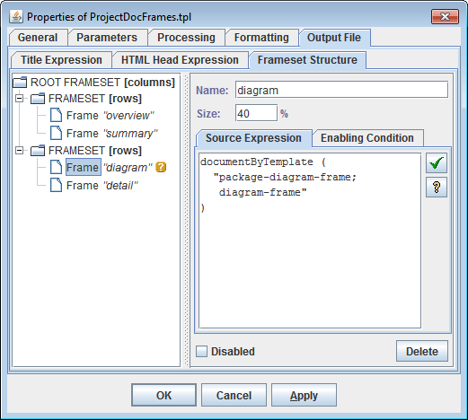
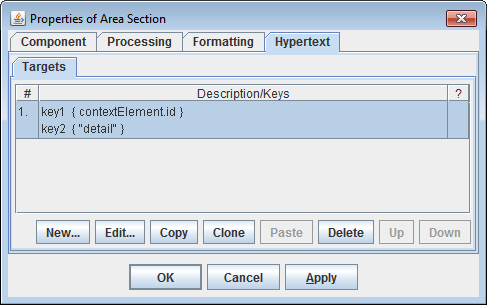
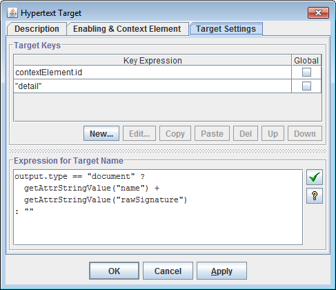
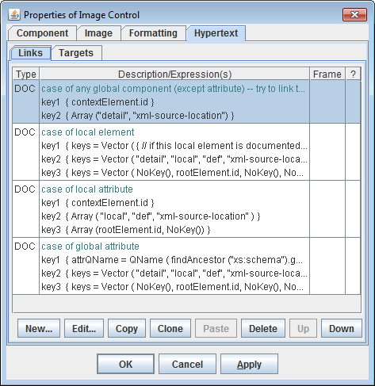
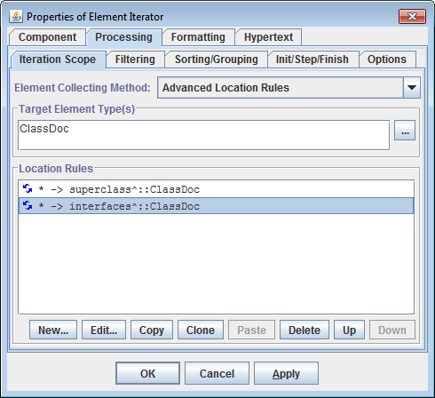
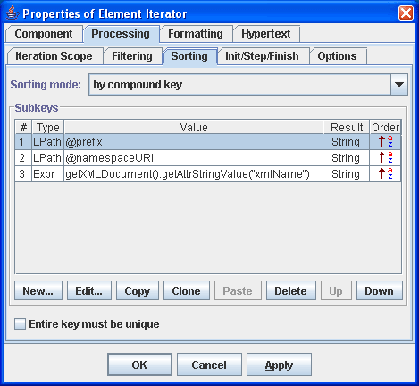

Ability to use any XML files as a data sources, retrieve any character or numeric data from them and generate by such data any kind of formatted/hypertext output documents.This features is available in DocFlex/XML.
Using special drivers written with DocFlex API, it is also possible to connect to any other non-XML data sources provided by a Java application.Such data sources (called Data Source Models (or DSMs) and drivers to them -- DSM Drivers) can be processed in the same way as XML-files and allow to generate by them any kind of documentation.
See DocFlex/Javadoc and DocFlex/Together as rich examples of working with such application-provided data sources.
By calling from one template another templates (subtemplates) it is possible to mix data from the different data sources and to generate by them a single documentation files.The involved data sources can be of any possible nature, both XML and non-XML types.
Using subtemplates allows to generate from one or more data sources a documentation that consists of many separate HTML files interconnected by a common network of hyperlinks and displayed in separate frame windows.This is achieved by creating special frameset templates.
Each frameset template consists of two major parts: the definition of a frameset structure and the template body.
The frameset structure is defined in the form of a tree as shown on the following screenshot:

It is used to generate a frameset HTML file which contains no actual data but only a layout of frame windows.
The documents displayed in the windows are generated during interpretation of the template body, which consists mostly of calls to the different document subtemplates:
DocFlex Technology supports inserting graphic images into the generated documentation.The images can be either taken from the existing graphics files (via URLs, file pathnames or Java resource names specified in the templates) -- static images, or generated dynamically by a Java application and, then, provided to the DocFlex Generator by a custom written DSM Driver (see DocFlex API for more details).
The supported graphics formats include JPEG, GIF, PNG, and WMF. Depending on the selected output format and the generator's settings, the images can be either inserted as the references to the graphics files stored externally near the generated documents (HTML, RTF) or embedded directly in the document files (RTF). See Image Formatting for more details.
For more information about image support, see also Image Control in Template Components documentation.
DocFlex allows to generate hypertext links between any parts of the generated documentation as well as to the external URLs.The internal links are generated using the special hyperlink source- and target-anchors defined within the properties of template components. Each anchor definition contains specifications for generating the anchor keys.
The following screenshot shows defining two hyperlink source anchors by a Data Control component (the two are because this control generates a text hyperlink which loads two frame windows at once; see description below):
And here is how the particular source anchor defined:
The following two screenshot show defining a hyperlink target anchor (there may be also several of them; but in that case, this is only for convenience purpose):


The generation is subdivided into two phases:
- During the first (estimation) phase, by the anchor definitions specified in the templates, the possible anchor positions in the output documents are produced, together with their anchor keys. These positions are stored in a single pool for all generated documents.
- On the second (generation) phase, when the real output is generated, by each anchor having a match in the anchor pool (i.e. another one of the opposite source/target type and with the same keys), the real hyperlink anchor (source or target) is produced and inserted in the output.
A hyperlink source definition may include a name of the targeted frame window (see screenshot above).
It is also possibility to define by the same template component several hyperlink sources assigned with different document destinations and targeted to different frame windows (see screenshot above). This allows to load from a generated hyperlink several frame windows at once with the different documents.
Hyperlinks within images (imagemaps)
For images provided by a Java application (via DSM Drivers), it is possible to generate multiple hyperlinks within a single image. To do this, the DSM Driver should also provide a hypertext imagemap for the image.
The following screenshot shows how various hyperlinks are defined for a complex diagram image (specified in the diagram.tpl template included in DocFlex/XML | XSDDoc):

DocFlex recognizes the following data types of XML-element/attribute values:
stringnumberbooleanobjectThese data types are considered in many situations. For example, when defining sorting of sequences of elements or attributes.
The '
object' data type represents a reference to any Java object and is useful when a data source is provided by a Java applications and represents its internal data.In addition, DocFlex recognizes attributes with the element identifier data types:
IDIDREFIDREFSThe values of
IDattributes are used to distinguish the particular elements. The values ofIDREForIDREFSattributes can be used for generation of hyperlinks.
FlexQuery-expressions are small scripts with Java-based syntax widely used in DocFlex templates to specify all kinds of dynamically computed settings (such as dynamic properties of template components, filter conditions and so on).The current FlexQuery implementation supports the following features:
- Each script may consist of any number of statements delimited with semicolons. The last statement should be an expression returning the result value of the whole script. The intermediate statements currently can be only assignments either to local variables (which can be used further within the following statements) or to generator properties.
- The supported operators within the expressions are the following:
Arithmetical +, -, *, /, % String concatenation + Number comparison ==, !=, <, <=, >, >= String and other types comparison ==, != Logical !, &&, || Conditional ?: Function call func (args) Property access -> or . - Each expression may return a value of any Java class type. However, only values of
string,numberandbooleantypes (which are equivalent of Javajava.lang.String,java.lang.Numberandjava.lang.Booleanclasses) can be processed by expression operators. Values of other types can be only passed as function parameters.- More than 80 general-purpose built-in utility functions are now available within the FlexQuery-expressions.
- A special utility function
'callForName()'allows to invoke a method of any custom-written external Java-class (implementing a special interface from DocFlex API).- Any custom implemented DSM Driver may also register its own utility functions to allow access to some specific features of the underlying DSM.
For instance, DocFlex/Together provides more than 20 additional utility functions which allow to use the functionality specific for Together OpenAPI interfaces.
- Within FlexQuery-expressions, it is possible to access the template parameters as well as various generator variables organized in the form of hierarchy of objects and properties of Generator Object Model (similar to Document Object Model in Dynamic HTML).
- Location Paths are special expressions used in DocFlex templates to specify searching of elements or attributes. Location Paths applied in DocFlex are similar to those in XPath and looks like the following:
Step1 / Step2 / ... / StepN- Each step may assume the form:
axis :: ETs [filter]- where
axisis the step's axis;ETsis a list of matching element types (delimited with '|');filteris a boolean FlexQuery-expression
StepN, in addition, may assume the form:@namewhere
nameis the name of an attribute.However, there are several important differences between Location Paths used in DocFlex and those used in XPath:
- The supported axes introduced in XPath are limited to the following:
child,self,child-or-self,descendant,descendant-or-selfandattribute(only in the form@name).- A new axis
linkwas introduced, which has a form:name^where
nameis the name of an attribute whose type should be eitherIDREForIDREFS. This axis selects all those elements of the XML document (or DSM) whose identifiers are listed in the attribute's value.- XPath predicates are replaced with a
filter, which can be a boolean FlexQuery-expression.For more information see documentation: Element Iterator (details) | Location Paths.
The general data processing scheme employed in DocFlex consists in organizing nested iterations by sets of elements collected from the data source. Such iterations are specified using Element Iterator template components.In addition to elements, it is possible to iterate by a set of attributes of a certain element or by multiple values of a certain attribute. Organizing iterations by sets of attributes can be useful when the same processing should be repeated for each attribute from the set. See Attribute Iterator documentation for more details.
This is a primary method used in DocFlex to specify collecting elements for iterations. According to this, an Element Iterator is specified with a set of Location Rules.
- Each Location Rule has the following form:
Matching Element Types → Location Path- The rule is activated when the current context element has one of the
Matching Element Types. Then, theLocation Pathis interpreted against the context element and a set of new elements is produced.Unlike techniques available in XSL Transformations, Location Rules allow to collect elements not only within a subtree attached to the context element but also to involve in the search the elements accessible via reference attributes (i.e. those with
IDREForIDREFStypes). This is achieved by usinglink-axes (introduced in DocFlex) together with specifying some Location Rules as recursive (i.e. repeatable an undefined number of times). For more details, see documentation: Element Iterator (details) | Recursive Location Rules.The following screenshot shows specifying the collecting elements by Location Rules in an Element Iterator:

Besides Location Rules, DocFlex supports two additional alternative methods for collecting iterated elements:The set of elements is produced as a sequence of connected elements according to two FlexQuery-expressions:
- an expression calculating the first element (basing on the current context element)
- an expression producing all subsequent elements each next from the previous one
This allows to organize iterations by an arbitrary set of elements provided by an external Java-class. The class should be written with the DocFlex API.For more information, see documentation: Element Iterator (details) | Specifying Element Iteration Scope.
The information placed in reports can be presented in a particular sorting order. This is achieved by specifying the sorting order for the iterated elements, attributes or the attribute values:
- by the element value (regarding its type)
- by the value of a specified element attribute (regarding its type)
- by a specified compound key which may consist of an array of subkeys generated separately for an element. The subkeys may have different data types and different ordering (ascending or descending). Two compound keys are compared by consecutive comparing their constituent subkeys regarding their data types and ordering.
Defining sorting by a compound key:

- by name
- by value (regarding its type)
- by an arbitrary order defined in the Attribute Iterator.
Multiple values of a single attribute can be sorted according to the value type.
For more information, see documentation: Element Iterator (details) | Sorting Element Iteration Scope and Template Components | Attribute Iterator.